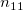
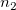

/math-07ab8bd2ced78ca04d507625c0c5c584.png "K\,\!") サンプルサイズ を持つ次のように表される2つ以上の独立した標本間の差を調べるものです。
サンプルサイズ を持つ次のように表される2つ以上の独立した標本間の差を調べるものです。
以下の説明は、NAGのアルゴリズムから引用したものです。
メディアン検定は、サンプルサイズ を持つ次のように表される2つ以上の独立した標本間の差を調べるものです。
メディアンの値はユーザが与えるのではなく、すべてのグループを組み合わせたデータが保存され、そこからメディアンが次式を使って計算されます。
nが偶数の場合、；nが奇数の場合、
ここで となり、 は、すべての観測データを小さい方から大きい方に並べたデータです。
検定は、プールドサンプルのメディアンの上下にいける各標本の度数表を作成します。
| 標本1 | 標本2 | …… | 標本K | 合計 | |
|  | |||||
/math-7f3acb829bee05cb06afa7c68c824143.png "Score > md\,\!") |
/math-8115c272068040fbf82f5a6329571ae2.png "n_{21}\,\!") |
/math-e17f0b1c025b09b2770ffc8957450930.png "n_{22}\,\!") |
|||
| 合計 | /math-7ae76161358672724be28c2a08a628ab.png "n_{1}\,\!") |
 | /math-baa52b85c066dbd5eeff3c078a69205b.png "n\,\!") |
すべての非空の標本に対する/math-cfebfa945941b02f58dc453d7b14aeb5.png "x^2\,\!") の統計量は次の式で計算されます。
の統計量は次の式で計算されます。
となり、です。
有意水準は、 分布(自由度/math-4dd90bab747a167e7975e1f8fb397a4d.png "k-1\,\!") )からのもので、 は非空の標本の数です。セルが1より小さい期待値を持つ場合、または20%以上のセルが5より小さい期待値を持つ場合、メッセージが出力されます。
)からのもので、 は非空の標本の数です。セルが1より小さい期待値を持つ場合、または20%以上のセルが5より小さい期待値を持つ場合、メッセージが出力されます。